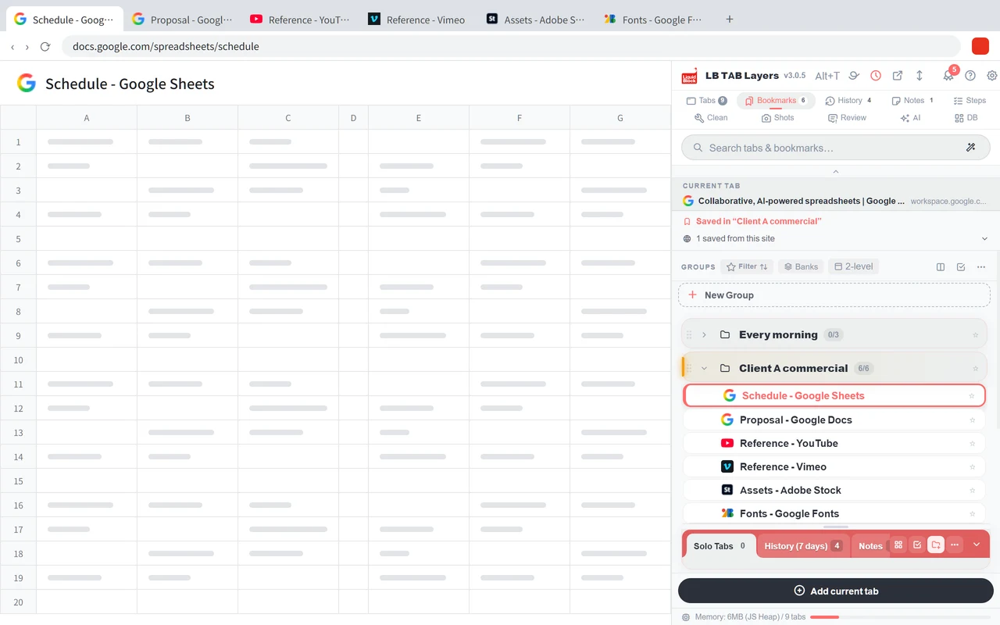
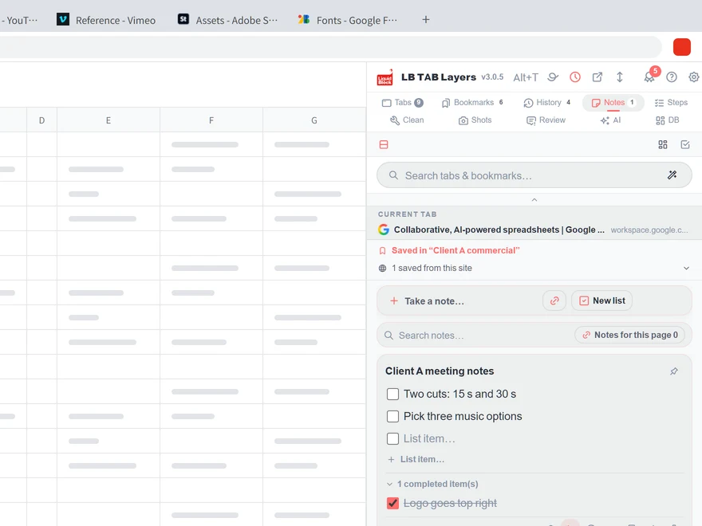
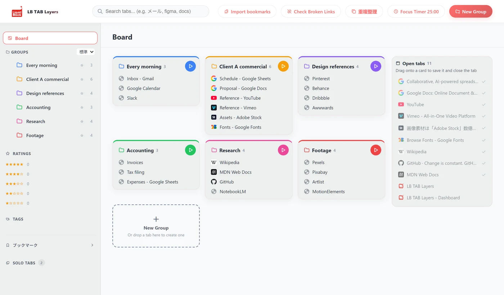
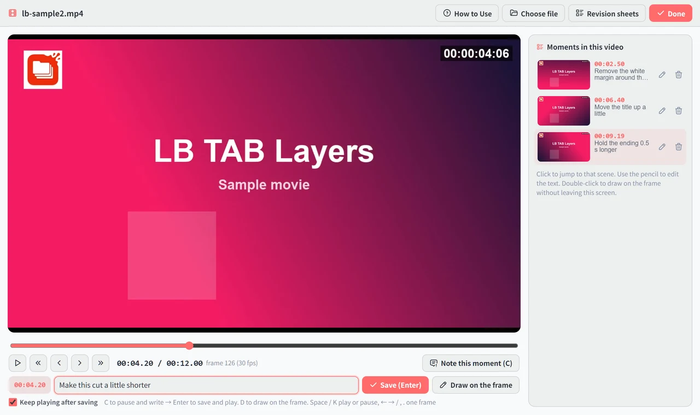

Start with tabs and bookmarks.
The rest is there when you need it.
This alone is enough to begin.

Gather tabs by project. ▶ opens them, ■ closes them.
Learn more → SaveAdd the current tab, pick several, or right-click. Three ways in.
Learn more → Kept as bookmarksSaved tabs live in your Chrome bookmarks. They stay even if you remove the extension.
Learn more → Fuzzy searchA few letters are enough to find the page.
Learn more → Solo tabsTidy up the tabs that are not in any project, all at once.
Learn more → HistoryReopen pages you visited, right from the panel.
Learn more →Once it is written down, you do not have to remember it.

Write next to the page. A note can also be a checklist.
Learn more →Split a job into steps, so you can see the end.
Make the projects and tabs that matter stand out.
For 25 minutes, sites that distract you will not open.
Attach the page you are viewing and ask for a summary or an answer.
When things pile up, use the big screen.

Organize groups and bookmarks on a large screen.
Learn more →Every project as a card. Drag a tab onto a card to put it away.
Forgot the name? Find it by how it looks.
Learn more →Clear out bookmarks that point to the same page.
Find bookmarks that no longer open.
Put finished projects away without deleting them.
Turn what you saw and thought into something you can pass on.

Write right on a YouTube or Vimeo video. Pause, write, Enter.
Capture a project’s pages together, as a ZIP or PowerPoint.
Share a project’s list of links in one go.
Selected tabs go straight into a notebook.
While sharing your screen, draw on the page to say “here.”
Because you use it every day.
Choose from 40 color themes.
See themes → Display modesPinned, overlay, separate window, or a tab.
Learn more → Panel layoutShow only what you want to see, with more room.
Learn more →Keep the sites you use most always at the top.
See unread counts in Gmail or Slack without opening them.
New articles as cards with images.
Open two pages side by side.
Alt+T opens the panel. You can change the keys.
Learn more →You do not need to learn everything at once.
The more you use it, the more medals you earn. There’s a small celebration for each first, too.
From minimal to dark. Beautiful in any lighting.
+ 32 more themes
Core features are free forever. Unlock unlimited power with PRO.
| Feature | Free | PRO (One-Time Purchase) |
|---|---|---|
| Auto Bookmark Sync | ✓ | ✓ |
| Max Groups | Up to 5 | Unlimited |
| Subgroup Nesting | 2 levels | Unlimited |
| Color Themes | 3 themes | All 40 themes |
| Today's Browsing History | ✗ | ✓ |
| Advanced AI Search (Gemini etc.) | ✗ (Built-in AI only) | ✓ (OpenAI/Claude etc.) |
| ★ Ranking & Tags | Up to 10 | Unlimited (★5 levels + custom tags) |
| Notes & checklists (linked to pages) | ✓ | ✓ |
| Switchable layouts | ✓ | ✓ |
| Folder view (v2.11.0) | ✓ (group and nesting limits apply) | ✓ |
| Step Tasks (v2.11.0) | During the trial only | ✓ |
| Ads (our product promos at the bottom of the panel) | Shown | None |
| Price | Free | $9.99 (one-time) |